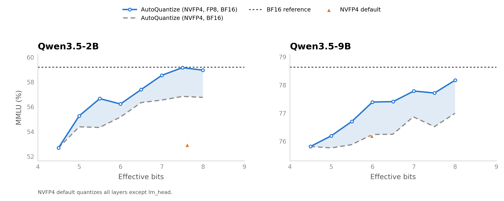

AutoQuantize: A Fast Automatic Mixed-Precision Assignment#
- Author:
Model Optimizer Team
- Date:
August 24, 2026
- Tags:
autoquantize, quantization, mixed-precision, modelopt
Why do we need AutoQuantize?#
LLMs carry a lot of redundancy, but not uniformly: a few layers — attention projections, the final layers of the network — are disproportionately sensitive to quantization, while most others (like MoE experts) are quite forgiving. Keeping just those few sensitive layers at higher precision (FP8 or BF16) while quantizing the rest to FP4 preserves accuracy with nearly all of FP4’s memory savings and speedups. The hard part is finding which layers to keep — traditionally a slow pile of per-model ablation experiments.
AutoQuantize, part of NVIDIA’s Model Optimizer library, automates this search: given a cost budget, it scores every layer’s quantization sensitivity with a fast gradient-based heuristic and finds the lowest-scoring mixed-precision assignment under that budget — no per-model ablation studies required.
How AutoQuantize works#
AutoQuantize is a neural architecture search (NAS) inspired method that works in three steps: score how sensitive each operation is to quantization, model the performance cost of each available format, and solve a knapsack-style integer linear program (ILP) for the lowest-scoring assignment under the cost budget. The sensitivity score uses a second-order Taylor approximation in the spirit of Optimal Brain Surgeon [1], while the ILP-based mixed-precision search builds on LLM-MQ [2].
AutoQuantize gradient: A fast, yet accurate sensitivity scoring#
The sensitivity score we want is simple to state: how much the model loss changes when a layer is quantized in isolation. Measuring that directly — quantize one layer at a time, re-evaluate the whole model — requires a full model evaluation per layer per candidate format, as we’ll quantify later (Table 1). We need a cheaper estimate.
Two observations give us a shortcut. First, for a trained model, a Taylor expansion of the loss around a layer’s output shows the loss change from a quantization perturbation is governed by the Hessian — the local curvature. Second, we use the diagonal Fisher instead of the full Hessian to make the computation practical, treating interactions between output-error coordinates as negligible. This is analogous to the diagonal-Fisher approximation used by SqueezeLLM [3] in weight space. Together these observations turn sensitivity into a gradient-squared-weighted output error, no explicit Hessian required.
Concretely, let \(Y_i\) be the BF16 output of operator \(i\), \(Y_i^{Q_{i,f}}\) its output under quantization format \(f\), \(g_i = \nabla_{Y_i}\mathcal{L}\) the gradient at that output, and \(H_i\) the local Hessian:
The first-order term vanishes in expectation for a trained model, leaving:
Keeping only the Hessian diagonal and estimating it with the diagonal Fisher (squared gradients) gives the sensitivity score:
where \(d\) is the feature dimension of the layer output.
The intuition: quantization perturbs the model, and the loss impact of that perturbation is the output error weighted by squared gradients. The error can be measured at the operation’s immediate output or further downstream (e.g. the block output); for linear layers we use the linear-layer output. Unlike LLM-MQ’s weight-space score, this output-side formulation can evaluate joint weight-and-activation formats. AutoQuantize also extends the search with deployment-restriction-aware grouped decisions, as described below.
Both ingredients are cheap: the output error \(Y_{i,k} - Y_{i,k}^{Q_{i,f}}\) comes from replaying the operator’s captured input through simulated quantization for each candidate format, and the gradient \(g_{i,k}\) from one backward pass per scoring batch.
Performance cost#
ModelOpt uses effective bits to model the average bit cost over AutoQuantize-eligible quantizable weights. The model includes format-provided overhead when an explicit effective-bits value is available; otherwise it estimates the cost from the format’s num_bits. Embeddings, norms, and other parameters outside the search are not included. Sweeping the target provides a consistent budget axis for comparing assignments.
Putting it together#
Following the effective-bits objective above, AutoQuantize solves the constrained optimization
where \(Q_{i,f}\) is the chosen format for operator \(i\), \(\mathrm{bits}(Q_{i,f})\) the modeled bit cost per eligible weight of format \(f\), \(N_{\mathrm{total}} = \sum_i N_{\mathrm{params}}(\mathrm{Op}_i)\) the eligible quantizable-weight count, and \(\bar{b}\) the user-specified average effective-bits target (e.g. \(\bar{b} = 4.8\)). A format-provided effective-bits value includes its declared overhead; formats without one use the num_bits estimate described above. Sweeping \(\bar{b}\) produces an optimal assignment for each budget by minimizing the sum of sensitivity scores, which serves as a proxy for model accuracy loss.
AutoQuantize expresses this optimization as an ILP, with one binary variable for every candidate format in each search decision. The solver selects exactly one format per decision while satisfying the effective-bits budget.
Deployment-restriction-aware search#
A mixed-precision assignment must respect the coupling constraints of its target runtime. AutoQuantize folds selected constraints directly into the search: any restriction of the form “this group of operators takes one joint format decision” becomes a single ILP decision with aggregated sensitivity and cost. This narrows the assignment to formats that coupled operators can share; runtime support still depends on the model, quantization formats, and documented export and deployment workflow.
Grouped decisions for coupled operators#
Deployment runtimes such as TensorRT-LLM, vLLM, and SGLang require coupled operators to use a single quantization format. AutoQuantize imposes the same restriction during the search by combining those operators into one format decision. For example, the Q, K, and V projections form one group, as do the gate and up projections in a dense MLP. Their individual sensitivity scores and costs are summed:
Summing sensitivities is consistent with the diagonal-Hessian approximation, which ignores interactions between the operators’ quantization errors. For QKV, this assumes that the Q, K, and V errors do not interact. A future investigation could instead quantize them jointly and measure sensitivity at the self-attention block output to capture those interactions.
Similarly, deployment runtimes may require all sparse experts in an MoE layer to use a single quantization format. AutoQuantize imposes this restriction by grouping them into one format decision. Their sensitivity is measured jointly at the MoE block output, while their individual costs are summed. Other MoE-block components, such as latent projections and shared experts, are not subject to this restriction and therefore remain separate decisions.
Results#
{kind=link}

Figure 1. MMLU accuracy vs. effective bits under AutoQuantize, Qwen3.5-2B/9B.
Figure 1 sweeps the AutoQuantize effective-bits budget and evaluates each resulting assignment on MMLU: more budget buys accuracy, so the curve is the memory-vs-accuracy trade you get to pick a point on. The trend is upward but not strictly monotonic, likely a mix of evaluation noise and the ILP solver selecting different assignments at neighboring budgets. The dotted horizontal lines are the BF16 references. Effective bits are parameter-count weighted across formats (NVFP4: 4.5 [4], FP8: 8, BF16: 16). The NVFP4 defaults exceed 4.5 because lm_head remains BF16.
Adding FP8 to the format menu helps across both reported sweeps: at every plotted budget, searching over NVFP4, FP8, and BF16 matches or beats NVFP4 and BF16 alone. A sensitive layer doesn’t need to fall back all the way to BF16 — FP8 is a good middle ground, protecting moderately sensitive layers at a fraction of the cost.
AutoQuantize gradient is fast!#
Direct sensitivity measurement evaluates the full model for every layer-format pair. For instance, KL-divergence-based mixed-precision assignment algorithms, including AutoQuantize KL-divergence scoring, quantize one layer at a time and compare the output distributions of the quantized and unquantized models. Because each layer requires a full-model pass, scoring scales as \(O(N_{\mathrm{layers}}^2)\). In contrast, for each scoring batch, AutoQuantize gradient scoring uses one backward pass and locally replays every candidate format at each scored module. Hence, its scoring work scales as \(O(N_{\mathrm{layers}} \times N_{\mathrm{formats}})\), resulting in a ~52× speedup on Qwen3.6-35B-A3B (Table 1).
Table 1. Scoring cost: gradient vs. KL divergence (lower is better).
Scoring method |
Scoring complexity |
Time taken for sensitivity estimation |
Peak GPU memory |
|---|---|---|---|
Gradient |
\(O(N_{\mathrm{layers}} \times N_{\mathrm{formats}})\) |
~16 minutes |
29 GB |
KL divergence |
\(O(N_{\mathrm{layers}}^2 \times N_{\mathrm{formats}})\) |
~14 hours |
23 GB |
ModelOpt AutoQuantize supports both sensitivity scoring methods — gradient (the default) and KL divergence. Measured on 4× NVIDIA RTX 6000 Ada GPUs with 128 samples at sequence length 512. Times cover sensitivity scoring only — not the end-to-end AutoQuantize run, which also includes calibration time for each format.
Memory. By default, AutoQuantize uses activation recomputation for gradient scoring. This is memory efficient because it avoids retaining all intermediate tensors from the forward pass. As shown in Table 1, the resulting peak memory overhead over a forward-only pass is small.
How to use ModelOpt AutoQuantize#
AutoQuantize is a one-call API in Model Optimizer — pass the model, a bit budget, the format menu to search over, and a calibration data loader:
import modelopt.torch.quantization as mtq
model, search_state = mtq.auto_quantize(
model,
constraints={"effective_bits": 4.8},
quantization_formats=[mtq.NVFP4_DEFAULT_CFG, mtq.FP8_DEFAULT_CFG],
data_loader=calib_loader,
forward_step=lambda model, batch: model(**batch),
loss_func=lambda output, batch: output.loss,
num_calib_steps=512,
num_score_steps=128,
)
The returned model carries the searched per-layer format assignment and is ready for export. For an end-to-end example on Hugging Face models — including the supported export workflow — see the AutoQuantize section of the ModelOpt hf_ptq README. AutoQuantize also works on Megatron Core models — see the AutoQuantize mixed-precision search example in Megatron-LM.
Next steps#
We are working on improving AutoQuantize in the following ways:
Hardware-aware cost. Effective bits is a fast proxy for deployment cost. Relying instead on hardware-measured costs — such as per-operator latency on the target GPU and inference runtime — would let the solver optimize for what actually matters: end-to-end inference speed.
Combinatorial effects of quantization. AutoQuantize currently scores each layer quantized in isolation, but quantization errors interact — the loss impact of quantizing two layers together is not always the sum of their individual scores. Capturing these combinatorial effects in the sensitivity estimate is the next step toward tighter accuracy at the same budget.
Conclusion#
AutoQuantize turns mixed-precision quantization from trial and error into a principled search: gradient-based sensitivity scoring in a single sweep, optimization with an ILP solver under your cost budget, and selected runtime coupling constraints incorporated into the assignment. Sweep the bit budget to find your model’s accuracy-vs-compression sweet spot, then follow the documented export and deployment workflow for the target model, formats, and runtime.